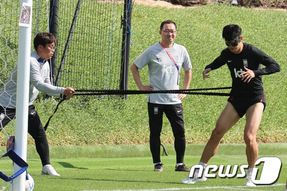

FIFA "마스크는 착용 가능, 문구 삽입은 불가"
일단 훈련 때는 7번 새겨진 마스크 착용
파울루 벤투 감독이 이끄는 대한민국 축구대표팀 주장 손흥민이 17일 오전(현지시간) 카타르 도하 알 에글라 트레이닝센터
에서 훈련하고 있다. 2022.11.17/뉴스1 © News1 이광호 기자
'마스크맨'으로 변신한 벤투호 주장 손흥민(30·토트넘)이 2022 국제축구연맹(FIFA)
카타르 월드컵에서 '7번'이 빠진 검정 마스크를 쓰고 뛸 것으로 보인다. FIFA가 선
수 보호 측면에서 마스크 착용은 허용했으나 특정 문구를 넣는 것은 불가하다는
입장을 내놓았다.
최근 안와골절 부상으로 수술을 받은 손흥민은 이번 대회에 마스크를 쓰고 그라
운드를 누빌 예정이다. 지난 16일부터 대표팀에 합류한 그는 훈련 때 코 위쪽을
덮어 '쾌걸 조로'를 연상케 하는 검정 마스크를 착용했다. 마스크 아래 부분에는
자신의 등번호인 '7'이 새겨져 있었다.
아직 어색한 듯 얼굴을 매만지는 모습도
있었으나 손흥민은 "(도하에)오기 전부터
소속팀에서 (마스크를 쓰고)훈련을 해왔
다. 크게 다른 느낌 없이 훈련을 소화했다.
조금 덥다보니 땀이 많이 났지만 (마스크
는) 생각보다 편안했다"고 말했다.
그러나 실전에서는 자신의 상징과 같은 7
번이 빠지게 된다.
대한축구협회에 따르면 FIFA는 마스크에 문구가 새겨진 것을 허용하지 않는다. 이
에 따라 같은 마스크지만 숫자가 없는 것을 착용하고 경기에 뛸 예정이다. FIFA는
선수보호용 마스크 착용과 관련해 '유니폼과 같은 컬러' 또는 '검정 마스크'로 제한
하고 있다.
협회 관계자는 17일 대표팀 훈련을 앞두고 "FIFA로부터 마스크 착용에 대한 승인
을 받았다.
다만 숫자가 새겨진 것은 사용할 수 없다는 규정에 따라 숫자가 없는
마스크를 쓰고 뛸 것"이라고 말했다.
협회에 따르면 손흥민은 숫자가 새겨지지 않은 마스크도 이미 충분히 가져온 상
태다.
한편 16일 도하 입성 첫날부터 곧바로 회복 훈련에 나서며 컨디션을 끌어 올린 손
흥민은 17일 훈련에서도 밝은 표정으로 동료들과 분위기 메이커 역할을 했다.
이날도 손흥민은 마스크를 쓰고 훈련을 했는데 아직까지는 '7'이 새겨진 마스크를
착용하고 땀을 흘렸다.
무더운 날씨에 바지를 허벅지까지 걷어 올렸으며, 동료인 황인범(올림피아코스),
황희찬(울버햄튼)과도 웃으며 대화를 나눴다. 필리페 쿠엘류 코치와도 밝은 표정
으로 이야기를 하며 환한 미소를 지었다.
가벼운 러닝과 함께 회복에 집중하며 컨디션을 끌어 올렸다.
한편 한국은 카타르 월드컵 조별리그 H조에서 우루과이(24일 오후 10시), 가나(28
일 오후 10일), 포르투갈(12월3일 0시)과 차례로 맞대결을 펼친다.